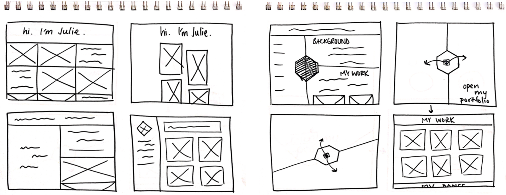
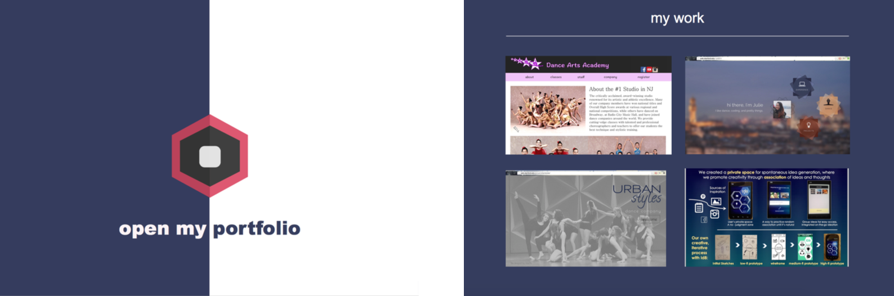

Design Process: My Online Portfolio
Goal: Design an online portfolio to showcase your past projects and work for future employers to view.
Garner Inspiration
To capture a sense of vibrancy while maintaining professionalism in my portfolio, I combined inspiration from structured elements and color. I composed my moodboard with gridded elements to represent structure, and I aimed to express the creative nature of my personality through typefaces.
(A Few) Budding Ideas
(Some) Wireframes
From my preliminary sketches, I selected a few ideas that were both implementable and unique to expand on and map out.
Let's Get Detailed
From my wireframes, I chose some to refine to flush out every detail and see what the finished product would look like on a web server. Made within Affinity Designer.
Implementation
Following the mockup with the yellow brushstroke, it was now time to implement the design. I used Masonry's JavaScript library to achieve the grid effect, added padding to the white project labels to create a sense of airiness and space, and enlarged the font-size of the body copy to allow for better readability. As a last touch, I swapped the yellow brushstroke for a deep purple, richer paint pattern. The variation in hues, shades, and multitude of strokes and streaks more accurately represent the many layers of creativity I possess. Through several more rounds of iteration and revision, I reached the design that you are seeing now.